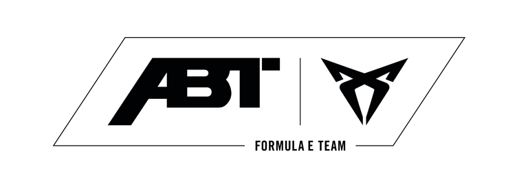

Lucas
Di Grassi
Data de Nacsimento: 11/05/1984(39)
Local de Nascimento: São Paulo, Brasil
Corrida de Estreia: 2014 Bejing E-Prix

Sergio
Sette Câmara
Data de Nascimento: 23/05/1998 (26)
Local de Nascimento: Belo Horixonte, Brasil
Corrida de Estreia: 2020 Berlin E-Prix